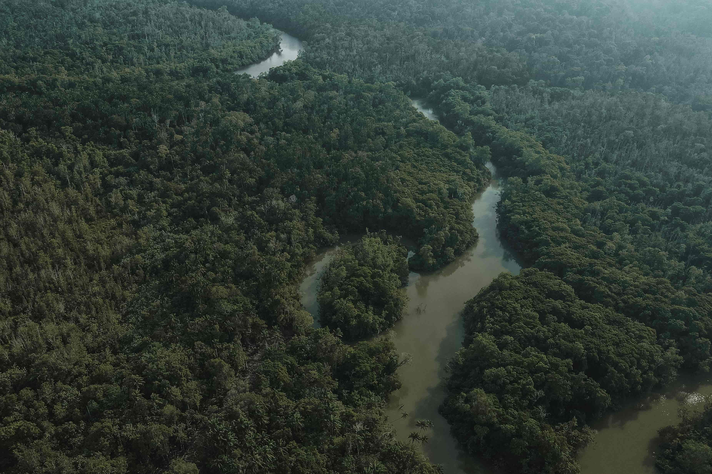
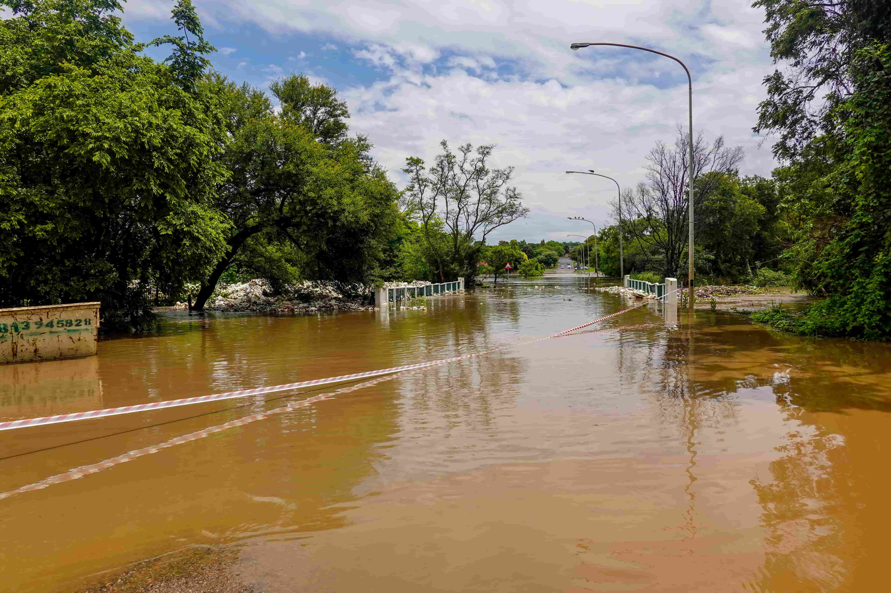

Obten más información
Ingrese su mail y seleccione que tipo de información desea recibir.
Nuestros bosques son el motor biológico de la Tierra, pero la deforestación masiva está apagando su latido. Cada año se pierden millones de hectáreas de vegetación, destruyendo hábitats enteros y acelerando una crisis climática que nos afecta a todos. El Objetivo de Desarrollo Sostenible 15 (ODS 15) nos desafía a detener la degradación de la tierra y frenar la pérdida de biodiversidad. Esta página es un espacio para entender el impacto de la tala indiscriminada, conocer las soluciones urgentes y descubrir cómo tus decisiones diarias pueden ayudar a restaurar el equilibrio verde que nuestro planeta necesita desesperadamente. El futuro de la vida terrestre está en nuestras manos. Explora, infórmate y sé parte del cambio.
Ingrese su mail y seleccione que tipo de información desea recibir.
La deforestación masiva a escala mundial hace que hábitats completos mueran llevando a diversos grupos de fauna y flora a migrar y desaparecerprovocando un efecto dominó que desestabiliza ecosistemas enteros. Cuando un bosque desaparece, no solo se pierden los árboles; se destruye un tejido vital de interacciones biológicas.
Nuevo

La pérdida acelerada de bosques reduce drásticamente el oxígeno que respiramos y acelera el calentamiento global. Quedan pocos años para revertir el daño.
Ver másNuevo

Cada árbol talado destruye el hogar de cientos de aves, insectos y mamíferos. La deforestación es la principal causa de la pérdida de biodiversidad actual.
Ver másNuevo

Sin árboles que absorban y liberen humedad, los suelos se vuelven desiertos. Las sequías extremas ya afectan la producción de nuestros alimentos básicos.
Ver más
Los árboles actúan como esponjas naturales contra el agua. Al eliminarlos, las lluvias intensas provocan inundaciones y deslaves destructivos en comunidades cercanas.
Ver más
La demanda de papel, madera y carne impulsa la tala masiva. Elegir productos certificados y reducir el consumo es nuestra mejor arma para salvar los bosques.
Ver más